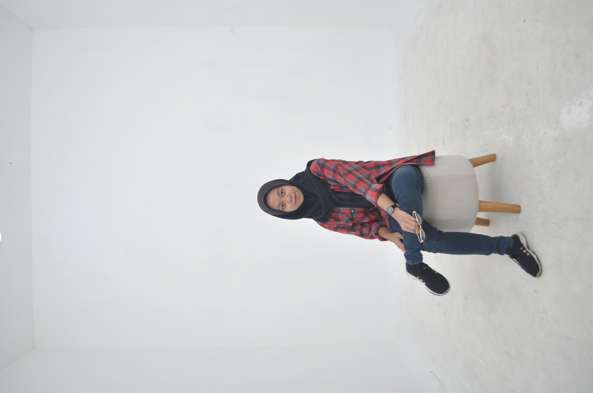

Halo, nama saya Anjelina Mentari Rustandi, seorang Mahasiswa di Fakultas teknologi Informasi Universitas Sebelas April Program Studi Informatika .
"Jangan pernah takut untuk mencoba hal baru. Setiap langkah maju, sekecil apapun, akan membawamu lebih dekat pada impianmu."
Anda bisa menghubungi saya melalui media sosial berikut:
| Nama Organisasi | Jabatan | Tahun |
|---|---|---|
| Dyaksa Jagat | Bendahara Umum | 2023 - 2024 |
| Dyaksa Jagat | Ketua Umum | 2024 - Sekarang |